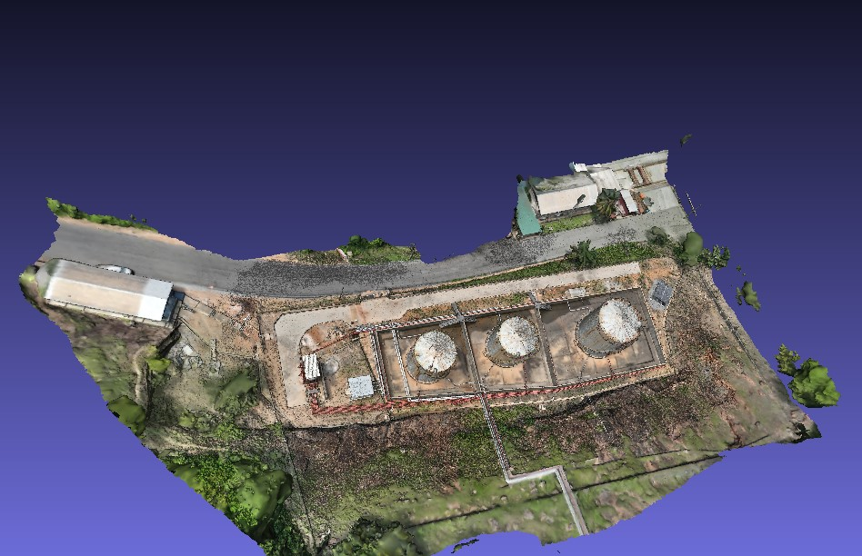

Overview
- Goal – Build an accurate 3D model of BOST’s fuel storage depot and jetty at Akosombo to support inspection, safety checks and future site planning.
- Data – High-overlap UAV imagery from multiple flights around tanks, bund walls, buildings and the shoreline.
- Workflow – Requirements + mission planning → UAV image capture with a DJI Matrice Enterprise → photogrammetric processing in Agisoft Metashape (dense point cloud, mesh, texture) → GIS/CAD-ready outputs.
- Result – A textured 3D model, orthomosaic and elevation products that engineers can use to visualise the site, measure distances and clearances, and plan upgrades.
Data Acquisition
- Clarified with BOST which assets were critical: storage tanks, pipe runs, bund walls, jetty and access roads.
- Designed flight plans for a DJI Matrice Enterprise UAV with nadir and oblique imagery to capture both tank roofs and walls.
- Led a small team on site to place ground control, run pre-flight checks and execute multiple flights with high overlap.
- Monitored image quality, overlap and coverage in the field, adjusting flight lines around tall structures and the jetty.
Processing & 3D Modelling
- Imported all images into Agisoft Metashape and ran alignment to generate a sparse reconstruction.
- Computed a dense point cloud of tanks, depot and shoreline, then built a cleaned, textured 3D mesh suitable for visual inspection and measurement.
- Derived orthomosaics and digital surface models, exported as GeoTIFF for use in GIS and engineering tools.
- Performed basic QA checks: positional accuracy against control points, artefact checks around tanks and jetty edges.
Outputs & Impact
- Delivered a navigable 3D model of the depot and jetty area for use in simple 3D viewers and desktop GIS.
- Provided orthomosaic and DSM layers that can be integrated into ArcGIS / Web GIS and CAD workflows.
- Enabled BOST engineers to visually inspect site conditions, measure clearances and plan future layout and safety improvements using current, high-resolution data.
